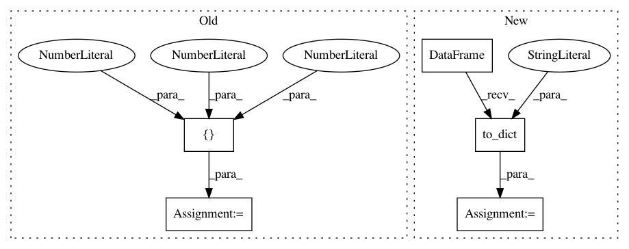

3052e961e54ead28c717b6bbf5c785946e727fa9,finetune/input_pipeline.py,BasePipeline,get_target_input_fn,#BasePipeline#Any#Any#,316
Before Change
batch_size = batch_size or self.config.batch_size
TS = tf.TensorShape
shapes ={
"features": TS([768,]),
"sequence_features": TS([self.config.max_length,768]),
"attention_weights": TS([12,512,512])
}
if self.config.base_model in [GPTModel, GPTModelSmall]:
output_types = {"features":tf.float32, "sequence_features":tf.float32, "attention_weights":tf.float32}
else:
After Change
def get_target_input_fn(self, features, batch_size=None):
batch_size = min(len(features),64)
features = pd.DataFrame(features).to_dict("list")
for key in features:
features[key] = np.array(features[key])
tf_dataset = lambda: tf.data.Dataset.from_tensor_slices(dict(features)).batch(batch_size)
return tf_dataset
In pattern: SUPERPATTERN
Frequency: 3
Non-data size: 5
Instances
Project Name: IndicoDataSolutions/finetune
Commit Name: 3052e961e54ead28c717b6bbf5c785946e727fa9
Time: 2019-06-20
Author: matthew.bayer@indico.io
File Name: finetune/input_pipeline.py
Class Name: BasePipeline
Method Name: get_target_input_fn
Project Name: IndicoDataSolutions/finetune
Commit Name: bb8cf918f0a6b0f63db15c2fd34f5d314ff51b02
Time: 2019-06-20
Author: matthew.bayer@indico.io
File Name: finetune/input_pipeline.py
Class Name: BasePipeline
Method Name: get_target_input_fn
Project Name: bokeh/bokeh
Commit Name: ef3b1f7a4d88b8f869afeb10184a7f437f4d764f
Time: 2015-08-12
Author: nroth@dealnews.com
File Name: bokeh/charts/tests/test_data_adapter.py
Class Name: TestDataAdapter
Method Name: setUp